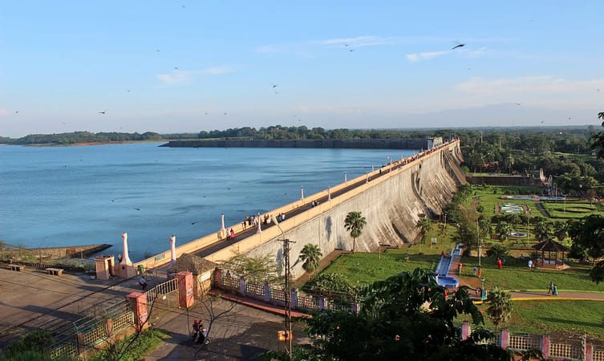

Places To Visit
Malambuzha Dam
Located at the foothills of the majestic Western Ghats, the Malampuzha Dam is the largest reservoir in Kerala located near Palakkad.
Palakkad Fort

One of the most historically important Palakkad tourist places is the Palakkad fort or Tipu’s fort.Celebrate in the sprawling green grounds of the fort with your family
Jain Temple

The Jain temple made of beautiful granite stones and featuring images of the Jain Tirthankaras and Yakshinis.
Popular Things To Do
Silent Valley National Park: Spectate The Magnificent Flora & Fauna

Silent Valley National Park: Spectate The Magnificent Flora & Fauna

Meenvallam Waterfalls: Admire This Gift Of Nature